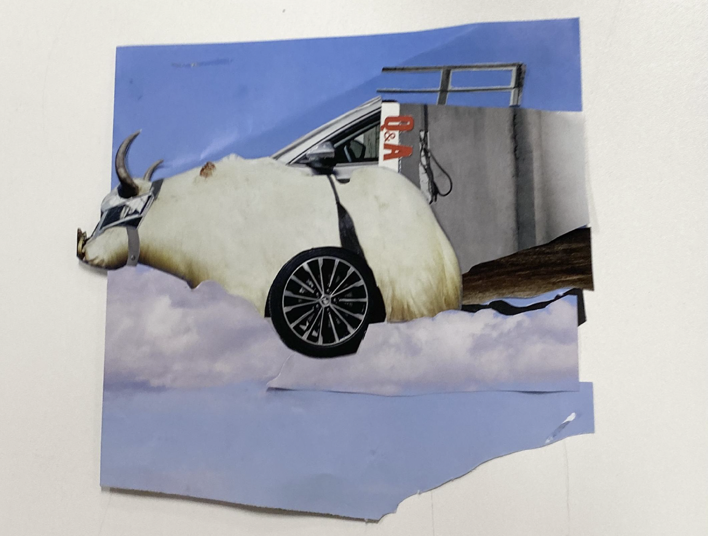

A series of collages
一组拼贴作品
A series of collage works exploring dreams, childhood and aspirations.
一组围绕梦境、童年与愿望展开的拼贴作品。
Explore →
查看详情 →
Six works containing collage, handmade book, photography, video and game.
包含拼贴、手工书、摄影、视频与游戏的六件作品。
A series of collage works exploring dreams, childhood and aspirations.
一组围绕梦境、童年与愿望展开的拼贴作品。
![[Work 2 thumbnail]](videos/2.1.png)
A handmade book about the world of TELE, chronicling the skeletal underworld and an adventure tale.
一本关于特乐世界的手工书，记录骷髅地下世界与一段冒险故事。
![[Work 3 image]](images/2.1.jpg)
A series of portrait photographs taken in Xiamen's Shapowei district, capturing the myriad flavours of life and the journey of human growth.
在厦门沙坡尾拍摄的一组肖像摄影，捕捉生活的多种气息与人的成长轨迹。
A hand-drawn animation without dialogue, revealing people's underlying social anxieties.
一部无对白的手绘动画，呈现人们潜在的社交焦虑。
A hexagonal grid-based item placement game demo video, where players can arrange various terrains according to their preferences.
一段基于六边形网格的物件摆放游戏演示视频，玩家可以根据喜好组合不同地形。
A hand-drawn animation exploring life, evolution, and genetics.
一部围绕生命、进化与基因展开的手绘动画。